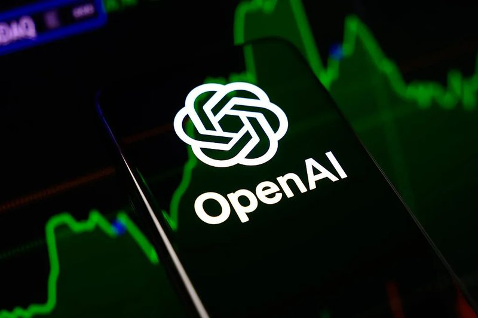
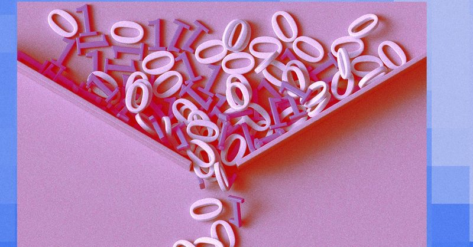
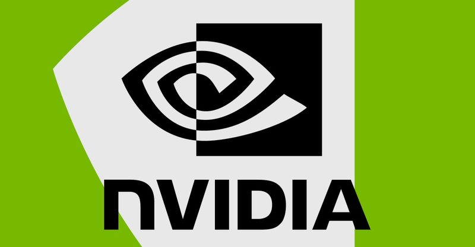
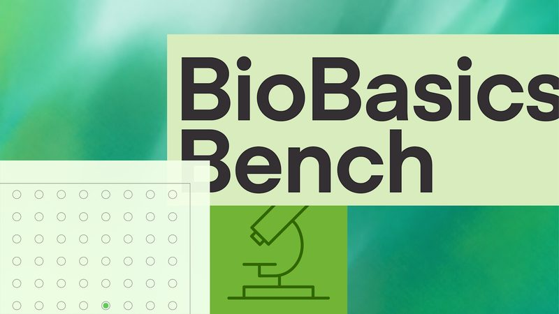
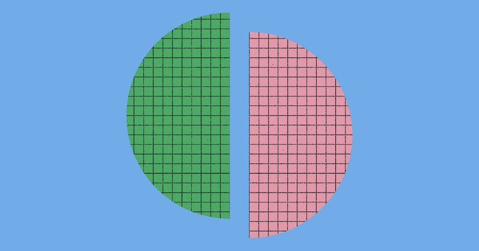
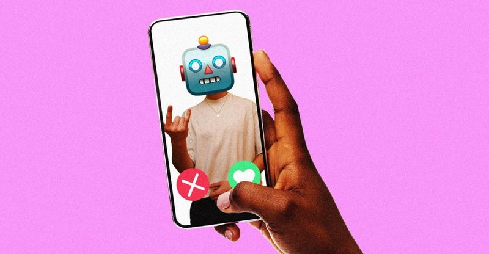

圖：TechCrunch／NurPhoto／Getty Images資金#1OpenAI 新一輪募得 110 億美元，估值 1.25 兆美元
彭博 11 月 6 日引述知情人士報導，OpenAI 在尚未結束的新一輪募資中已拿到 110 億美元，估值 1.25 兆美元，整輪預計數週內完成、總額約 200 億美元。彭博 9 月底曾報導 OpenAI 目標募 300 億美元，目前數字明顯低於原本目標。
💡 跟你有什麼關係：OpenAI 的資金多寡會影響 ChatGPT 的價格、免費額度與新功能推出速度；募資規模不如預期，也反映市場對 AI 成長的態度開始轉趨保守。
⚠️ 消息來自彭博引述匿名人士，OpenAI 未對 TechCrunch 回應。同日彭博也報導 Anthropic 上市的潛在買家，估值看法低至 1.1 兆美元。
📰 原始來源：TechCrunch（2026-11-06，引彭博） ↗
圖：WIRED Staff／Getty Images觀點#2AI 公司搶買企業舊信件、內部文件來訓練模型
WIRED 資深記者 Steven Levy 11 月 6 日報導，資料仲介正向企業兜售：把舊的文件、電子郵件、Slack 訊息、工單賣給 AI 實驗室，報價從 35 萬到 180 萬美元，有的開到 200 萬美元。Mercor、Micro1、Handshake 等公司是主要買家，破產的 Spirit Airlines 也把 8 萬個信箱與 5 億則內部訊息拿出來拍賣。
💡 跟你有什麼關係：你在公司寫過的信、聊天紀錄，未來可能在公司倒閉或轉手時被打包賣去訓練 AI；業者說會去除個資，但空服員工會已對 Spirit 的出售提出異議，拍賣目前暫停。
⚠️ Micro1 執行長稱資料市場每年 400 到 500 億美元，WIRED 表示無法查證。業者都稱已去識別化，但批評者認為匿名化未必能完全排除隱私風險。
📰 原始來源：WIRED（2026-11-06） ↗
圖：The Verge政策#3美國核准的 Nvidia H200 中國組裝商，登記地址竟是空辦公室
紐約時報 11 月 7 日報導，美國商務部今年核准中國公司 New Matrix 把 Nvidia H200 晶片組裝成 AI 伺服器，但記者到北京的登記地址只看到空殼辦公室，物業也查無此公司。該公司成立 17 個月，股東與 2024 年被美國列入貿易黑名單的私募基金有關。
💡 跟你有什麼關係：高階 AI 晶片能否流向受限單位，牽動美中科技管制與台灣供應鏈；審查若有漏洞，後續可能出現更嚴的出口規定，影響晶片與伺服器廠商訂單。
⚠️ 紐時指出這是第二家「找不到實體辦公室」的 H200 核准商；目前沒有報導證實晶片已流向受限用戶。本則依 The Verge 轉述紐時報導。
📰 原始來源：The Verge（2026-11-07，引紐約時報） ↗ 圖：The Verge新聞#4
圖：The Verge新聞#4紐時：中國情報機關吸收晶片業主管，接近黃仁勳打探 AI 晶片
紐約時報 11 月 6 日引述一份美國情報備忘錄報導，中國國家安全部吸收新加坡公司 Megaspeed 主管 Alice Huang，打探美國 AI 晶片情報，並可能影響 Nvidia 爭取對中出售最先進晶片。紐時先前已報導黃仁勳是間諜行動目標，這次「已被吸收」是新內容；美國眾議院三個委員會已要求黃仁勳出席閉門簡報。
💡 跟你有什麼關係：Nvidia 是台灣供應鏈最大客戶之一，若美國國會因此收緊對中晶片政策，可能影響相關廠商出貨與股價。
⚠️ 內容出自媒體引述的情報備忘錄，未經官方證實。Nvidia 發言人向紐時表示，黃仁勳與 Alice Huang 的互動「並無異常」，公司也不與客戶分享機密資訊。本則依 The Verge 轉述紐時報導。
📰 原始來源：The Verge（2026-11-06，引紐約時報） ↗
圖：OpenAI研究#5OpenAI 推實驗室資料判讀測驗 BioBasicsBench，最強模型拿 66.7%
OpenAI 11 月 6 日與酵素設計公司 Ligo 推出 BioBasicsBench，用 100 道真實實驗室題目，測 AI 能否看懂電泳膠圖、培養皿照片、顯微鏡影像並找出錯誤。最高推理設定下，GPT-6 Astra 平均拿到 66.7% 分數，前代 GPT-5.6 Sol 為 43.8%。
💡 跟你有什麼關係：AI 被期待加快新藥與疾病研究，但實驗判讀出錯會讓研究走冤枉路；這份測驗把「AI 能不能當可靠實驗助手」具體量化。
⚠️ 這是 OpenAI 自家測驗與自評結果。官方也列出模型仍會讓既有假設蓋過對照組證據、數菌落多算約 12% 等問題，還不能直接取代人類判斷。
📰 原始來源：OpenAI（2026-11-06） ↗
圖：Anthropic研究#6Anthropic 讓 Claude 在空檔「做夢」整理記憶，答題表現明顯提升
Anthropic 11 月 6 日發表 AI 代理記憶設計的研究，讓 Claude 在工作之間的空檔回顧紀錄、修正錯誤、整理成筆記與 wiki，官方稱為「做夢」。實驗中把整理次數從 2 次加到 128 次，25 道題的得分從 13% 升到 48%；用整理後的 wiki 產生摘要，事實涵蓋率也從 72% 提高到 100%。
💡 跟你有什麼關係：很多人用 AI 助理時最困擾的是它「記不住」或記錯；這類做法若放進產品，AI 就能在多次對話之間累積正確經驗，不必每次重新交代背景。
⚠️ 研究多在 Anthropic 自建的測試環境完成，屬官方自評；文章說明的是設計方向，未宣布對一般 Claude 用戶的新功能。
📰 原始來源：Anthropic（2026-11-06） ↗
圖：Cath Virginia／The Verge／Getty Images觀點#7舊金山約會圈：對 AI 的立場成了新的配對條件
The Verge 11 月 6 日走訪舊金山約會圈，發現不少人在 Hinge 等交友 App 個人檔案直接寫「用 AI 的別來」，態度像政治立場一樣被當成篩選條件。也有媒人表示，因 Anthropic 與 OpenAI 可能上市，客戶開始把「AI 工程師」列為偏好條件。
💡 跟你有什麼關係：AI 已不只是工作工具，也開始影響人際關係與價值觀判斷；和朋友、伴侶談到 AI 時，彼此的看法差異可能比想像中大。
⚠️ 這是記者在單一城市的觀察與訪談，受訪者多用化名，不代表普遍統計。
📰 原始來源：The Verge（2026-11-06） ↗✅ 2026/11/8（日） 可以做：如果公司或你自己有接到「買舊文件、舊信件」的提案，先確認合約怎麼處理客戶與同事的個資，再決定要不要回覆。
🗂️ 過去 14 天